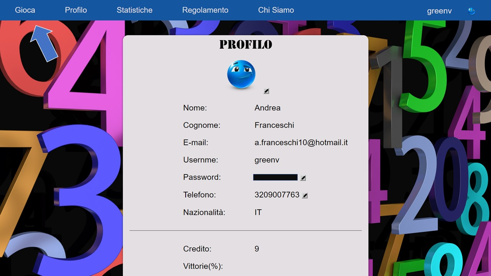

Come Giocare
Benvenuti al 10 & Lotto il gioco del lotto virtuale più bello di sempre!
Il 10 & Lotto é un gioco molto facile e divertente! Accedi con il tuo username e la tuapassword dalla pagina principale di LogIn.Se non sei iscritto registrati qui!! Per te al primo accesso 50 crediti!
Dopo aver effettuato l'accesso premi Gioca nella navigation bar in alto(vedi immagine qua sotto).

10 & Lotto:
Decidi quanti numeri giocare (da 1 a 10) e la cifra da scommettere(da 1 a 5) nel menù a sinistra. Poi seleziona i tuoi numeri nella griglia.Numero Oro:
Ad ogni estrazione, tra i numeri della ventina vincente 10 & LOTTO verrà estratto un NUMERO GOLD. Dopo aver scelto i tuoi numeri hai la possibilità di scommettere un altro credito aggiungendo l'opzione "GOLD" alla giocata; Se il NUMERO GOLD estratto nella ventina vincente è tra i numeri giocati, per te tanti crediti aggiuntivi fino ad un massimo di 98.415!Scopri qui tutte le vincite possibili!
L'Estrazione:
Dopo aver selezionato i tuoi numeri, la puntata e l'eventuale numero d'oro premi il bottone Estrai Numeri . Un algoritmo casuale estrae 20 numeri tra i 90 disponibili facendoli apparire sotto la griglia, accanto ai tuoi numeri selezionati. Per controllare il risultato dell'estrazione premi Confronta Numeri e scopri la vincita.Infine il pulsante Rigioca ti permette di giocare ancora.
Nell'immagine in basso una simulazione di gioco con 5 numeri giocati e la puntata di 3 crediti.
Valutazione:
Ricorda che se resti senza credito puoi lasciarci un tuo feedback. Rispondi alle domande proposte valutando da 1 a 5 stelle. Per te in regalo ulteriori 20 monete.